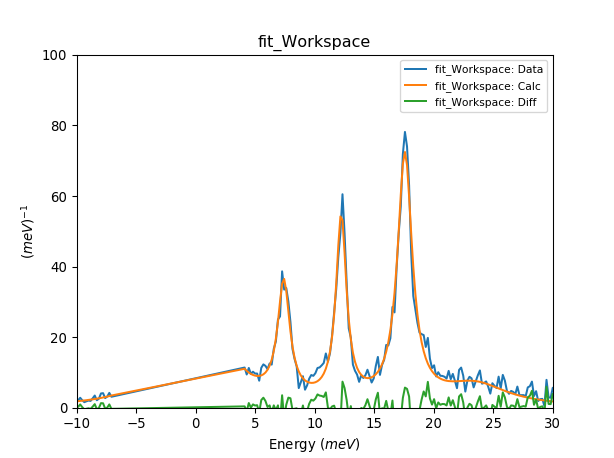
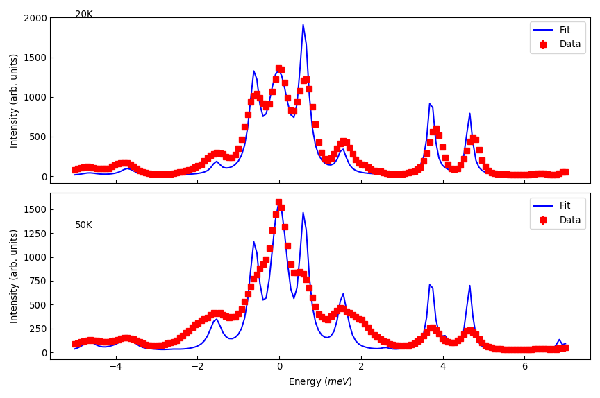
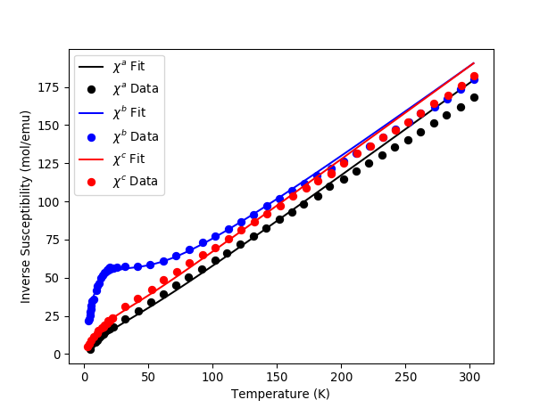
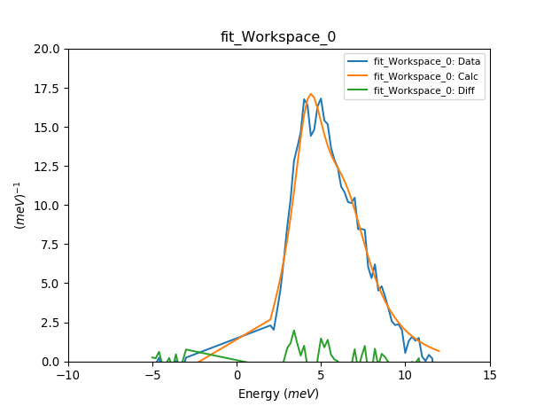
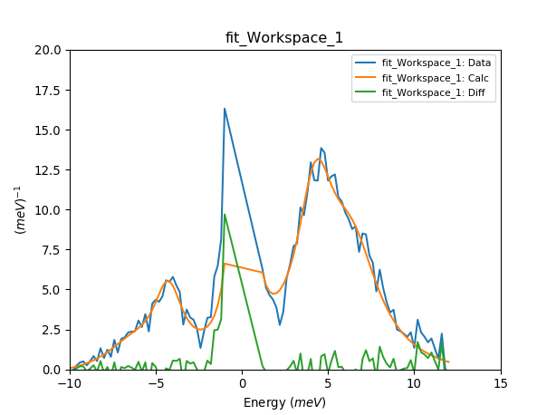
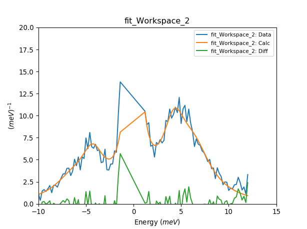

Crystal Field Examples#
Mantid supports the calculation and fitting of inelastic neutron scattering (INS) measurements of transitions between crystal field (or crystalline electric field) energy levels. The scientific background is summarised in the concept page whilst the syntax of the Python commands used is described in the interface page
This page contains specific worked examples. The data files can be found here. Please download and unzip this into a folder which is on your Mantid path (set using the “Manage User Directories” menu item).
Fitting INS spectrum#
from CrystalField import CrystalField, CrystalFieldFit
data_ws1 = Load('NdOs2Al10_5K35meV_Ecut_0to3ang_bp15V1.xye')
# Set up the crystal field model.
cf = CrystalField('Nd', 'C2v', Temperature=5, FWHM=1,
B20=0.19, B22=0.11, B40=-0.0004, B42=-0.002, B44=-0.012, B60=5.e-05, B62=0.00054, B64=-0.0006, B66=0.0008)
cf.PeakShape = 'Lorentzian'
cf.IntensityScaling = 2 # Scale factor if data is not in absolute units (mbarn/sr/f.u./meV), will be fitted.
# Runs the fit
fit = CrystalFieldFit(Model=cf, InputWorkspace=data_ws1,MaxIterations=200)
fit.fit()
# Plots the data and print fitted parameters
plotSpectrum('fit_Workspace',[0,1,2],error_bars=False)
plt.xlim([-10,30])
plt.ylim([0,100])
for parnames in ['B20', 'B22','B40','B42', 'B44', 'B60','B62','B64','B66']:
print (parnames+' = '+str(fit.model[parnames])+' meV')
table = mtd['fit_Parameters']
print ('Cost function value = '+str(table.row(table.rowCount()-1)['Value']))

Fitting with resolution function#
from CrystalField import CrystalField, CrystalFieldFit, Background, Function, ResolutionModel
from pychop.Instruments import Instrument
# load the data
data_ws1 = Load('MER38435_10p22meV.txt')
data_ws2 = Load('MER38436_10p22meV.txt')
# Sets up a resolution function
merlin = Instrument('MERLIN', 'G', 250.)
merlin.setEi(10.)
resmod = ResolutionModel(merlin.getResolution, xstart=-10, xend=9.0, accuracy=0.01)
Kelvin_to_meV = 1./11.6
# Parameters from https://doi.org/10.1016/0921-4526(91)90575-Y
lit_par = {'B20': -.27, 'B22': -.34, 'B40':1e-6, 'B42':0.04158, 'B44':0.01369, 'B60':0.112e-3, 'B62':0.4185e-3, 'B64':-0.555e-3, 'B66':0.588e-3} # K
for parameter in lit_par.keys():
lit_par[parameter] *= Kelvin_to_meV
# Set up the crystal field model.
cf = CrystalField('Ho', 'D2', Temperature=[25, 50], FWHM=0.3, **lit_par)
cf.PeakShape = 'Lorentzian'
cf.IntensityScaling = [0.2, 0.2] # Scale factor if data is not in absolute units (mbarn/sr/f.u./meV), will be fitted.
cf.ResolutionModel = [resmod, resmod]
cf.background = Background(peak=Function('Gaussian', Height=1200, Sigma=0.4/2.3))
cf.background[1].peak.ties(Height=1400, PeakCentre=0, Sigma=0.4/2.3)
# Runs the fit
fit = CrystalFieldFit(Model=cf, InputWorkspace=[data_ws1, data_ws2], MaxIterations=100, Output='Fit')
fit.fit()
# Plots the fit
res_ws = [mtd['Fit_Workspace_0'], mtd['Fit_Workspace_1']]
titles = ['20K', '50K']
titley = [2000, 1300]
fig, axs = plt.subplots(figsize=(9, 6), nrows=2, ncols=1, sharex=True, subplot_kw={'projection':'mantid'})
for ii in range(2):
axs[ii].errorbar(res_ws[ii], 'rs', wkspIndex=0, label='Data')
axs[ii].plot(res_ws[ii], 'b-', wkspIndex=1, label='Fit')
axs[ii].legend()
axs[ii].set_ylabel('Intensity (arb. units)')
axs[ii].tick_params(axis='both', direction='in')
axs[ii].annotate(titles[ii], (-5, titley[ii]))
axs[0].set_xlabel('')
fig.tight_layout()
fig.show()

Fitting magnetic susceptibility#
from CrystalField import CrystalField, CrystalFieldFit, PhysicalProperties
import matplotlib.pyplot as plt
sus_a = Load('NdOs2Al10_sus_a.txt')
sus_b = Load('NdOs2Al10_sus_b.txt')
sus_c = Load('NdOs2Al10_sus_c.txt')
cf = CrystalField('Nd', 'C2v',
B20=0.19, B22=0.11, B40=-0.0004, B42=-0.002, B44=-0.012, B60=5.e-05, B62=0.00054, B64=-0.0006, B66=0.0008)
# Simultaneously fit data measured in a, b and c directions
cf.PhysicalProperty = [
PhysicalProperties('susc', Hdir=[1,0,0], Inverse=True, Unit='cgs'),
PhysicalProperties('susc', Hdir=[0,1,0], Inverse=True, Unit='cgs'),
PhysicalProperties('susc', Hdir=[0,0,1], Inverse=True, Unit='cgs')]
fit = CrystalFieldFit(Model=cf, InputWorkspace=[sus_a, sus_b, sus_c], MaxIterations=100, Output='fit_susc')
fit.fit()
# Print fitted parameters and plot results
blm={}
for parname in ['B20','B22', 'B40', 'B42', 'B44','B60','B62','B64','B66']:
blm[parname] = cf[parname]
print parname+"="+str(cf[parname])
calc_a = mtd['fit_susc_Workspaces'][0]
calc_b = mtd['fit_susc_Workspaces'][1]
calc_c = mtd['fit_susc_Workspaces'][2]
fig, ax = plt.subplots(subplot_kw={'projection': 'mantid'})
ax.plot(calc_a.x(1),calc_a.y(1),'-k',label='$\chi^a$ Fit')
ax.plot(mtd['sus_a'].x(0),mtd['sus_a'].y(0),'ok',label='$\chi^a$ Data')
ax.plot(calc_b.x(1),calc_b.y(1),'-b',label='$\chi^b$ Fit')
ax.plot(mtd['sus_b'].x(0),mtd['sus_b'].y(0),'ob',label='$\chi^b$ Data')
ax.plot(calc_c.x(1),calc_c.y(1),'-r',label='$\chi^c$ Fit')
ax.plot(mtd['sus_c'].x(0),mtd['sus_c'].y(0),'or',label='$\chi^c$ Data')
ax.legend(loc='upper left')
ax.set_xlabel('Temperature (K)')
ax.set_ylabel('Inverse Susceptibility (mol/emu)')
fig.show()

Fitting multiple INS spectra#
from CrystalField import CrystalField, CrystalFieldFit
datadir = ''
data_ws1=Load(datadir+'cecuga3Mlacuga3_15meV5K0to2p5angbp2V1.xye')
data_ws2=Load(datadir+'cecuga3Mlacuga3fp824_15meV50K0to2p5angbp2V1.xye')
data_ws3=Load(datadir+'cecuga3Mlacuga3fp824_15meV100K0to2p5angbp2V1.xye')
# Set up the crystal field model for multiple spectra.
# This is indicated by the number of elements in the list of temperatures.
# Optionally other parameters like FWHM and IntensityScaling can be lists if these initial parameters for each
# spectra should differ.
cf = CrystalField('Ce', 'C4v', Temperature=[5,50,100], FWHM=[1,1,1], B20=0.0633, B40=0.01097, B44=0.09985)
cf.PeakShape = 'Lorentzian'
cf.IntensityScaling = [2, 2, 2] # Scale factor if data is not in absolute units (mbarn/sr/f.u./meV), will be fitted.
# Runs the fit
fit = CrystalFieldFit(Model=cf, InputWorkspace=[data_ws1, data_ws2, data_ws3], MaxIterations=200)
fit.fit()
# Plots the data and print fitted parameters
plotSpectrum('fit_Workspace_0', [0,1,2], error_bars=False)
plt.ylim([0,20])
plt.xlim([-10,15])
plotSpectrum('fit_Workspace_1', [0,1,2], error_bars=False)
plt.ylim([0,20])
plt.xlim([-10,15])
plotSpectrum('fit_Workspace_2', [0,1,2], error_bars=False)
plt.ylim([0,20])
plt.xlim([-10,15])
# Prints output parameters and cost function.
for parnames in ['B20', 'B40','B44']:
print (parnames+' = '+str(fit.model[parnames])+' meV')
table = mtd['fit_Parameters']
print ('Cost function value = '+str(table.row(table.rowCount()-1)['Value']))
  


B20 = 0.101723272944 meV
B40 = 0.012725904646 meV
B44 = 0.0890276949598 meV
Cost function value = 1.79652249577
Fixing Background Parameters#
from CrystalField import Background, CrystalField, Function
# Sets up the crystal field model
refpars = {'B20':0.2, 'B40':-0.00164, 'B60':0.0001146, 'B66':0.001509}
cf = CrystalField('Pr', 'C6v', Temperature=5, **refpars)
cf.IntensityScaling = 0.05
cf.FWHMVariation = 0.0
cf.PeakShape = 'Gaussian'
# Creates a background using a list of Function objects
cf.background = Background(functions=[Function('PseudoVoigt', Intensity=101, FWHM=0.8, Mixing=0.84, PeakCentre=-0.1),
Function('Gaussian', Height=1.8, Sigma=0.27, PeakCentre=9.0)])
# Fixes all the parameters of the PseudoVoigt to their current values.
cf.background.functions[0].fix('all')
# Fixes the PeakCentre and Height of the Gaussian to their current values.
cf.background.functions[1].fix('PeakCentre', 'Height')
Tying Background Parameters#
from CrystalField import Background, CrystalField, Function
# Sets up the crystal field model
refpars = {'B20':0.2, 'B40':-0.00164, 'B60':0.0001146, 'B66':0.001509}
cf = CrystalField('Pr', 'C6v', Temperature=5, **refpars)
cf.IntensityScaling = 0.05
cf.FWHMVariation = 0.0
cf.PeakShape = 'Gaussian'
# Creates a background using a list of Function objects
cf.background = Background(functions=[Function('PseudoVoigt', Intensity=101, FWHM=0.8, Mixing=0.84, PeakCentre=-0.1),
Function('Gaussian', Height=1.8, Sigma=0.27, PeakCentre=9.0)])
# Ties some of the parameters in the Gaussian to different values.
cf.background.functions[1].ties(PeakCentre=9.0, Height=2.0)
Category: Techniques